大家知道，麦克斯韦电动力学——像现在通常为人们所理解的那样——应用到运动的物体上时，就要引起不对称，而这种不对称似乎不是现象所固有的。比如设想一个磁体同一个导体之间的电动力的相互作用。在这里，可观察到的现象只同导体和磁体的相对运动有关，可是按照通常的看法，这两个物体之中，究竟是这个在运动，还是那个在运动，却是截然不同的两回事。如果是磁体在运动，导体静止着，那么在磁体附近就会出现一个具有一定能量的电场，它在导体各部分所在的地方产生一股电流。但是如果磁体是静止的，而导体在运动，那么磁体附近就没有电场，可是在导体中却有一电动势，这种电动势本身虽然并不相当于能量，但是它——假定这里所考虑的两种情况中的相对运动是相等的——却会引起电流，这种电流的大小和路线都同前一情况中由电力所产生的一样。
诸如此类的例子，以及企图证实地球相对于“光媒质”运动的实验的失败，引起了这样一种猜想： 绝对静止这概念，不仅在力学中，而且在电动力学中也不符合现象的特性，倒是应当认为，凡是对力学方程适用的一切坐标系，对于上述电动力学和光学的定律也一样适用，对于第一级微量来说，这是已经证明了的。我们要把这个猜想（它的内容以后就称之为“相对性原理” [2] ）提升为公理，并且还要引进另一条在表面上看来同它不相容的公理： 光在空虚空间里总是以一确定的速度V 传播着，这速度同发射体的运动状态无关。由这两条公理，根据静体的麦克斯韦理论，就足以得到一个简单而又不自相矛盾的动体电动力学。“光以太”的引用将被证明是多余的，因为按照这里所要阐明的见解，既不需要引进一个具有特殊性质的“绝对静止的空间”，也不需要给发生电磁过程的空虚空间中的每个点规定一个速度矢量。
这里所要阐明的理论——像其他各种电动力学一样——是以刚体的运动学为根据的，因为任何这种理论所讲的，都是关于刚体（坐标系）、时钟和电磁过程之间的关系。对这种情况考虑不足，就是动体电动力学目前所必须克服的那些困难的根源。
一、 运动学部分
§1 同时的定义
设有一个牛顿力学方程在其中有效的坐标系。为了使我们的陈述比较严谨，并且便于将这坐标系同以后要引进来的别的坐标系在字面上加以区别，我们叫它“静系”。
如果一个质点相对于这个坐标系是静止的，那么它相对于后者的位置就能够用刚性的量杆按照欧几里得几何的方法来定出，并且能用笛卡尔坐标来表示。
如果我们要描述一个质点的运动，我们就以时间的函数来给出它的坐标值。现在我们必须记住，这样的数学描述，只有在我们十分清楚地懂得“时间”在这里指的是什么之后才有物理意义。我们应当考虑到： 凡是时间在里面起作用的我们的一切判断，总是关于同时的事件的判断。比如我说，“那列火车7点钟到达这里”，这大概是说： “我的表的短针指到7同火车的到达是同时的事件。” [3]
可能有人认为，用“我的表的短针的位置”来代替“时间”，也许就有可能克服由于定义“时间”而带来的一切困难。事实上，如果问题只是在于为这只表所在的地点来定义一种时间，那么这样一种定义就已经足够了；但是，如果问题是要把发生在不同地点的一系列事件在时间上联系起来，或者说——其结果依然一样——要定出那些在远离这只表的地点所发生的事件的时间，那么这样的定义就不够了。
当然，我们对于用如下的办法来测定事件的时间也许会感到满意，那就是让观察者同表一起处于坐标的原点上，而当每一个表明事件发生的光信号通过空虚空间到达观察者时，他就把当时的时针位置同光到达的时间对应起来。但是这种对应关系有一个缺点，正如我们从经验中所已知道的那样，它同这个带有表的观察者所在的位置有关。通过下面的考虑，我们得到一种比较切合实际得多的测定法。
如果在空间的A 点放一只钟，那么对于贴近A 处的事件的时间，A 处的一个观察者能够由找出同这些事件同时出现的时针位置来加以测定。如果又在空间的B点放一只钟——我们还要加一句，“这是一只同放在A 处的那只完全一样的钟”——那么，通过在B 处的观察者，也能够求出贴近B 处的事件的时间。但要是没有进一步的规定，就不可能把A 处的事件同B 处的事件在时间上进行比较。到此为止，我们只定义了“A 时间”和“B 时间”，但是并没有定义对于A 和B 是公共的“时间”。只有当我们通过定义，把光从A 到B 所需要的“时间”规定为等于它从B 到A 所需要的“时间”，我们才能够定义A 和B 的公共“时间”。设在“A 时间”tA 从A 发出一道光线射向B ，它在“B 时间”tB 又从B 被反射向A ，而在“A 时间”t′A 回到A 处。如果
tB -tA =t′A -tB ，
那么这两只钟按照定义是同步的。
我们假定，这个同步的定义是可以没有矛盾的，并且对于无论多少个点也都适用，于是下面两个关系是普遍有效的：
1. 如果在B 处的钟同在A 处的钟同步，那么在A 处的钟也就同B 处的钟同步。
2. 如果在A 处的钟既同B 处的钟，又同C 处的钟同步，那么，B 处同C 处的两只钟也是同步的。
这样，我们借助于某些（假想的）物理经验，对于静止在不同地方的各只钟，规定了什么叫做它们是同步的，从而显然也就获得了“同时”和“时间”的定义。一个事件的“时间”，就是在这事件发生地点静止的一只钟同该事件同时的一种指示，而这只钟是同某一只特定的静止的钟同步的，而且对于一切的时间测定，也都是同这只特定的钟同步的。
根据经验，我们还把下列量值
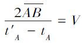
当作一个普适常数（光在空虚空间中的速度）。
要点是，我们用静止在静止坐标系中的钟来定义时间；由于它从属于静止的坐标系，我们把这样定义的时间叫做“静系时间”。
§2关于长度和时间的相对性
下面的考虑是以相对性原理和光速不变原理为依据的，这两条原理我们定义如下。
1. 物理体系的状态据以变化的定律，同描述这些状态变化时所参照的坐标系究竟是用两个在互相匀速移动着的坐标系中的哪一个并无关系。
2. 任何光线在“静止的”坐标系中都是以确定的速度V运动着，不管这道光线是由静止的还是运动的物体发射出来的。由此，得
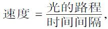
这里的“时间间隔”是依照§1中所定义的意义来理解的。
设有一静止的刚性杆；用一根也是静止的量杆量得它的长度是l 。我们现在设想这杆的轴是放在静止坐标系的X 轴上，然后使这根杆沿着X 轴向x 增加的方向作匀速的平行移动（速度是v ）。我们现在来考查这根运动着的杆的长度，并且设想它的长度是由下面两种操作来确定的：
a） 观察者同前面所给的量杆以及那根要量度的杆一道运动，并且直接用量杆同杆相叠合来量出杆的长度，正像要量的杆、观察者和量杆都处于静止时一样。
b） 观察者借助于一些安置在静系中的，并且根据§1作同步运行的静止的钟，在某一特定时刻t ，求出那根要量的杆的始末两端处于静系中的哪两个点上。用那根已经使用过的在这情况下是静止的量杆所量得的这两点之间的距离，也是一种长度，我们可以称它为“杆的长度”。
由操作a）求得的长度，我们可称之为“动系中杆的长度”。根据相对性原理，它必定等于静止杆的长度l .
由操作b）求得的长度，我们可称之为“静系中（运动着的）杆的长度”。这种长度我们要根据我们的两条原理来加以确定，并且将会发现，它是不同于l 的。
通常所用的运动学心照不宣地假定了： 用上述这两种操作所测得的长度彼此是完全相等的，或者换句话说，一个运动着的刚体，于时期t ，在几何学关系上完全可以用静止在一定位置上的同一物体来代替。
此外，我们设想，在杆的两端（A 和B ），都放着一只同静系的钟同步了的钟，也就是说，这些钟在任何瞬间所报的时刻，都同它们所在地方的“静系时间”相一致；因此，这些钟也是“在静系中同步的”。
我们进一步设想，在每一只钟那里都有一位运动着的观察者同它在一起，而且他们把§1中确立起来的关于两只钟同步运行的判据应用到这两只钟上。设有一道光线在时间 [4] tA 从A 处发出，在时间tB 于B 处被反射回，并在时间t′A 返回到A 处。考虑到光速不变原理，我们得到：
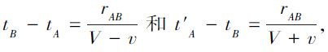
此处rAB 表示运动着的杆的长度——在静系中量得的。因此，同动杆一起运动着的观察者会发现这两只钟不是同步运行的，可是处在静系中的观察者却会宣称这两只钟是同步的。
由此可见，我们不能给予同时这概念以任何绝对的意义；两个事件，从一个坐标系看来是同时的，而从另一个相对于这个坐标系运动着的坐标系看来，它们就不能再被认为是同时的事件了。
§3从静系到另一个相对于它作匀速移动的坐标系的坐标和时间的变换理论
设在“静止的”空间中有两个坐标系，每一个都是由三条从一点发出并且互相垂直的刚性物质直线所组成。设想这两个坐标系的X 轴是叠合在一起的，而它们的Y 轴和Z 轴则各自互相平行着。 [5] 设每一系都备有一根刚性量杆和若干只钟，而且这两根量杆和两坐标系的所有的钟彼此都是完全相同的。
现在对其中一个坐标系（k ）的原点，在朝着另一个静止的坐标系（K ）的x 增加方向上给以一个（恒定）速度v ，设想这个速度也传给了坐标轴、有关的量杆，以及那些钟。因此，对于静系K 的每一时间t ,都有动系轴的一定位置同它相对应，由于对称的缘故，我们有权假定k 的运动可以是这样的： 在时间t （这个“t ”始终是表示静系的时间），动系的轴是同静系的轴相平行的。
我们现在设想空间不仅是从静系K 用静止的量杆来量度，而且也可从动系k 用一根同它一道运动的量杆来量，由此分别得到坐标x，y，z 和ξ，η，ζ. 再借助于放在静系中的静止的钟，用§1中所讲的光信号方法，来测定一切安置有钟的各个点的静系时间t ;同样，对于一切安置有同动系相对静止的钟的点，它们的动系时间τ 也是用§1中所讲的两点间的光信号方法来测定，而在这些点上都放着后一种〔对动系静止的〕钟。
对于完全地确定静系中一个事件的位置和时间的每一组值x，y，z，t ，对应有一组值ξ，η，ζ，τ ，它们确定了那一事件对于坐标系k的关系。现在要解决的问题是求出联系这些量的方程组。
首先，这些方程显然应当都是线性的，因为我们认为空间和时间是具有均匀性的。
如果我们置x′=x-vt ，那么显然，对于一个在k 系中静止的点，就必定有一组同时间无关的值x′，y，z .我们先把τ定义为x′，y，z 和t 的函数。为此目的，我们必须用方程来表明τ 不是别的，而只不过是k 系中已经依照§1中所规定的规则同步化了的静止钟的全部数据。
从k 系的原点在时间τ 0 发射一道光线，沿着X 轴射向x′ ，在τ 1 时从那里反射回坐标系的原点，而在τ 2 时到达；由此必定有下列关系：
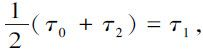
或者，当我们引进函数τ 的自变数，并且应用在静系中的光速不变的原理：
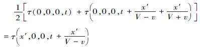
如果我们选取x′ 为无限小，那么，
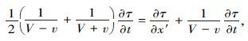
或者
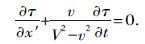
应当指出，我们可以不选坐标原点，而选任何别的点作为光线的出发点，因此刚才所得到的方程对于x′，y，z 的一切数值都该是有效的。
作类似的考查——用在H 轴和Z 轴上——并且注意到，从静系看来，光沿着这些轴传播的速度始终是
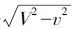
，这就得到：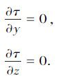
由于τ 是线性函数，从这些方程得到：
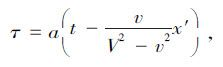
此处a 暂时还是一个未知函数φ （v ）,并且为了简便起见，假定在k 的原点，当τ =0时，t =0.
借助于这一结果，就不难确定ξ，η，ζ 这些量，这只要用方程来表明，光（像光速不变原理和相对性原理所共同要求的）在动系中量度起来也是以速度V 在传播的。对于在时间τ =0向ξ 增加的方向发射出去的一道光线，其方程是：
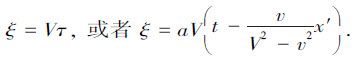
但在静系中量度，这道光线以速度V-v 相对于k 的原点运动着，因此得到：
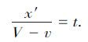
如果我们以t 的这个值代入关于ξ 的方程中，我们就得到：
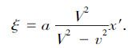
用类似的办法，考查沿着另外两根轴走的光线，我们就求得：
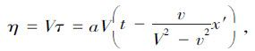
此处
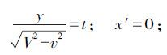
因此
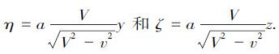
代入x′ 的值，我们就得到：
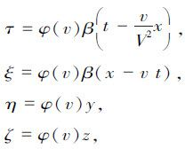
此处
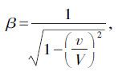
而φ 暂时仍是v 的一个未知函数。如果对于动系的初始位置和τ 的零点不作任何假定，那么这些方程的右边都有一个附加常数。
我们现在应当证明，任何光线在动系量度起来都是以速度V 传播的，如果像我们所假定的那样，在静系中的情况就是这样的；因为我们还未曾证明光速不变原理同相对性原理是相容的。
在t =τ =0时，这两个坐标系共有一个原点，设从这原点发射出一个球面波，在K 系里以速度V 传播着。如果（x,y,z ）是这个波刚到达的一点，那么
x 2 +y 2 +z 2 =V 2 t 2 .
借助我们的变换方程来变换这个方程，经过简单的演算后，我们得到：
ξ 2 +η 2 +ζ 2 =V 2 τ 2 .
由此，在动系中看来，所考查的这个波仍然是一个具有传播速度V的球面波。这表明我们的两条基本原理是彼此相容的。 [6]
在已推演得的变换方程中，还留下一个v 的未知函数φ ，这是我们现在所要确定的。
为此目的，我们引进第三个坐标系K′ ，它相对于k 系作这样一种平行于Ξ 轴的移动，使它的坐标原点在Ξ 轴上以速度-v 运动着。设在t =0时，所有这三个坐标原点都重合在一起，而当t =x =y =z =0时，设K′ 系的时间t′ 为零。我们把在K′ 系量得的坐标叫做x′,y′,z′ ，通过两次运用我们的变换方程，我们就得到：
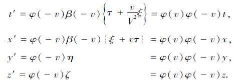
由于x′，y′，z′ 同x，y，z 之间的关系中不含有时间t ,所以K 同K′ 这两个坐标系是相对静止的，而且，从K 到K′ 的变换显然也必定是恒等变换。因此：
φ (v )φ (-v )=1.
我们现在来探究φ (v )的意义。我们注意k 系中H 轴上在ξ =0，η =0，ζ =0和ξ =0，η=l ,ζ =0之间的这一段。这一段的H 轴，是一根对于K 系以速度v 作垂直于它自己的轴运动着的杆。它的两端在K 中的坐标是：
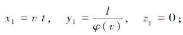
和
x 2 =vt ,y 2 =0,z 2 =0.
在K 中所量得的这杆的长度也是l /φ (v )；这就给出了函数φ 的意义。由于对称的缘故，一根相对于自己的轴作垂直运动的杆，在静系中量得的它的长度，显然必定只同运动的速度有关，而同运动的方向和指向无关。因此，如果v 同-v 对调，在静系中量得的动杆的长度应当不变。由此推得：
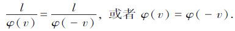
从这个关系和前面得出的另一关系，就必然得到φ (v )=1，因此，已经得到的变换方程就变为： [7]
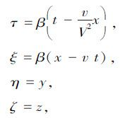
此处
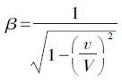
§4 关于运动刚体和运动时钟所得方程的物理意义
我们观察一个半径为R 的刚性球 [8] ，它相对于动系k 是静止的，它的中心在k 的坐标原点上。这个球以速度v 相对于K 系运动着，它的球面的方程是：
ξ 2 +η 2 +ζ 2 =R 2 .
用x，y，z 来表示，在t =0时，这个球面的方程是：
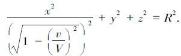
一个在静止状态量起来是球形的刚体，在运动状态——从静系看来——则具有旋转椭球的形状了，这椭球的轴是
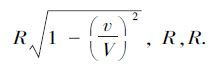
这样看来，球（因而也可以是无论什么形状的刚体）的Y 方向和Z 方向的长度不因运动而改变，而X 方向的长度则好像以
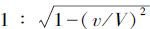
的比率缩短了，v 愈大，就缩短得愈厉害。对于v =V ，一切运动着的物体——从“静”系看来——都缩成扁平的了。对于大于光速的速度，我们的讨论就变得毫无意义了；此外，在以后的讨论中，我们会发现，光速在我们的物理理论中扮演着无限大速度的角色。很显然，从匀速运动着的坐标系看来，同样的结果也适用于静止在“静”系中的物体。
进一步，我们设想有若干只钟，当它们同静系相对静止时，它们能够指示时间t ；而当它们同动系相对静止时，就能够指示时间τ ,现在我们把其中一只钟放到k 的坐标原点上，并且校准它，使它指示时间τ .从静系看来，这只钟走得快慢怎样呢？
在同这只钟的位置有关的量x,t 和τ 之间，显然下列方程成立：
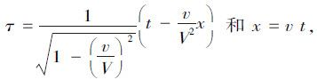
因此，
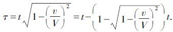
由此得知，这只钟所指示的时间（在静系中看来）每秒钟要慢1-
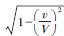
秒，或者——略去第四级和更高级的［小］量——要慢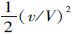
秒。从这里产生了如下的奇特后果。如果在K 的A 点和B 点上各有一只在静系看来是同步运行的静止的钟，并且使A 处的钟以速度v 沿着AB 联线向B 运动，那么当它到达B 时，这两只钟不再是同步的了，从A 向B 运动的钟要比另一只留在B 处的钟落后
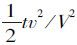
秒（不计第四级和更高级的［小］量），t 是这只钟从A 到B 所费的时间。我们立即可见，当钟从A 到B 是沿着一条任意的折线运动时，上面这结果仍然成立，甚至当A 和B 这两点重合在一起时，也还是如此。
如果我们假定，对于折线证明的结果，对于连续曲线也是有效的，那么我们得到这样的命题： 如果A 处有两只同步的钟，其中一只以恒定速度沿一条闭合曲线运动，经历了t 秒后回到A ，那么，比起那只在A 处始终未动的钟来，这只钟在它到达A 时，要慢
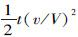
秒。由此，我们可以断定： 在赤道上的摆轮钟 [9] ，比起放在两极的一只在性能上完全一样的钟来，在别的条件都相同的情况下，它要走得慢些，不过所差的量非常之小。§5速度的加法定理
在以速度v 沿K 系的X 轴运动着的k 系中，设有一个点依照下面的方程在运动：
ξ =wξ τ , η =wη τ , ζ =0,
此处wξ 和wη 都表示常数。
求这个点对于K 系的运动。借助于§3中得出的变换方程，我们把x，y，z，t 这些量引进这个点的运动方程中来，我们就得到：
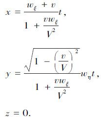
这样，依照我们的理论，速度的平行四边形定律只在第一级近似范围内才是有效的。我们置：
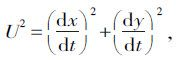
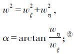
②原文是：
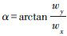
.——编译者注。α 因而被看作是v 和w 两速度之间的交角。经过简单演算后，我们得到：
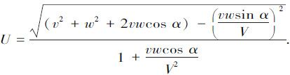
值得注意的是，v 和w 是以对称的形式进入合成速度的式子里的。如果w 也取X 轴（Ξ 轴）的方向，那么我们就得到：
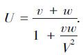
从这个方程得知，由两个小于V 的速度合成而得的速度总是小于V .因为如果我们置v =V -κ ，w =V -λ ，此处κ 和λ 都是正的并且小于V ，那么：
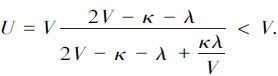
进一步还可看出，光速V 不会因为同一个“小于光速的速度”合成起来而有所改变。在这场合下，我们得到：
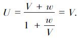
当v 和w 具有同一方向时，我们也可以把两个依照§3的变换联合起来，而得到U 的公式。如果除了在§3中所描述的K 和k 这两个坐标系之外，我们还引进另一个对k 作平行运动的坐标系k′ ，它的原点以速度w 在Ξ 轴上运动着，那么我们就得到x,y,z,t 这些量同k′ 的对应量之间的方程，它们同那些在§3中所得到的方程的区别，仅仅在于以
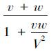
这个量来代替“v ”；由此可知，这样的一些平行变换——必然地——形成一个群。
我们现在已经依照我们的两条原理推导出运动学的必要命题，我们要进而说明它们在电动力学中的应用。
二、 电动力学部分
§6 关于空虚空间麦克斯韦-赫兹方程的变换。关于磁场中由运动所产生的电动力的本性
设关于空虚空间的麦克斯韦-赫兹方程对于静系K 是有效的，那么我们可以得到：
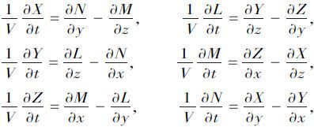
此处（X，Y，Z ）表示电力的矢量，而（L，M，N ）表示磁力的矢量。
如果我们把§3中所得出的变换用到这些方程上去，把这电磁过程参照于那个在§3中所引用的、以速度v 运动着的坐标系，我们就得到如下方程：
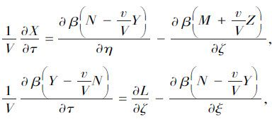
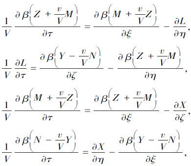
此处
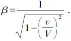
相对性原理现在要求，如果关于空虚空间的麦克斯韦-赫兹方程在K 系中成立，那么它们在k 系中也该成立。也就是说，对于动系k 的电力矢量（X′，Y′，Z′ ）和磁力矢量（L′，M′，N′ ）——它们是在动系k中分别由那些在带电体和磁体上的有重动力作用来定义的——下列方程成立：
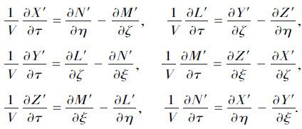
显然，为k 系所求得的上面这两个方程组必定表达完全同一回事，因为这两个方程组都相当于K 系的麦克斯韦-赫兹方程。此外，由于两组里的各个方程，除了代表矢量的符号以外，都是相一致的，因此，在两个方程组里的对应位置上出现的函数，除了一个因子ψ （v ）之外，都应当相一致，而ψ （v ）这因子对于一个方程组里的一切函数都是共同的，并且同ξ，η，ζ 和τ 无关，而只同υ 有关。由此我们得到如下关系：
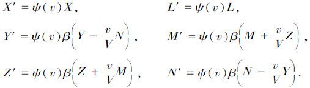
我们现在来作这个方程组的逆变换，首先要用到刚才所得到的方程的解，其次，要把这些方程用到那个由速度-v 来表征的逆变换（从k 变换到K ）上去，那么，当我们考虑到如此得出的两个方程组必定是恒等的，就得到：
ψ （v ）·ψ （-v ）=1.
再者，由于对称的缘故， [10]
ψ （v ）=ψ （-v ）；
所以
ψ （v ）=1，
我们的方程也就具有如下形式：
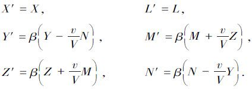
为了解释这些方程，我们作如下的说明： 设有一个点状电荷，当它在静系K 中量度时，电荷的量值是“1”，那就是说，当它静止在静系中时，它以1达因的力作用在距离1厘米处的一个相等的电荷上。根据相对性原理，在动系中量度时，这个电荷的量值也该是“1”。如果这个电荷相对于静系是静止的，那么按照定义，矢量（X，Y，Z ）就等于作用在它上面的力。如果这个电荷相对于动系是静止的（至少在有关的瞬时），那么作用在它上面的力，在动系中量出来等于矢量（X′，Y′，Z′ ）。由此，上面方程中的前面三个，在文字上可以用如下两种方法来表述：
1. 如果一个单位点状电荷在一个电磁场中运动，那么作用在它上面的，除了电力，还有一个“电动力”。要是我们略去v/V的二次以及更高次幂所乘的项，这个电动力就等于单位电荷的速度同磁力的矢积除以光速。（旧的表述方式）
2. 如果一个单位点状电荷在一个电磁场中运动，那么作用在它上面的力就等于在电荷所在处出现的一种电力，这个电力是我们把这电磁场变换到同这单位电荷相对静止的一个坐标系上去时所得出的。（新的表述方式）
对于“磁动力”也是相类似的。我们看到，在所阐述的这个理论中，电动力只起着一个辅助概念的作用，它的引用是由于这样的情况： 电力和磁力都不是独立于坐标系的运动状态而存在的。
同时也很明显，开头所讲的，那种在考察由磁体同导体的相对运动而产生电流时所出现的不对称性，现在是不存在了。而且，关于电动力学的电动力的“位置”（Sitz）问题（单极电机），现在也不成为问题了。
§7 多普勒原理和光行差的理论
在K 系中，离坐标原点很远的地方，设有一电动波源，在包括坐标原点在内的一部分空间里，这些电磁波可以在足够的近似程度上用下面的方程来表示：
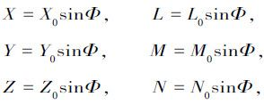
此处
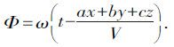
这里的（X 0 ，Y 0 ，Z 0 ）和（L 0 ，M 0 ，N 0 ）是规定波列的振幅的矢量，a，b，c 是波面法线的方向余弦。我们要探究由一个静止在动系k 中的观察者看起来的这些波的性状。
应用§6所得出的关于电力和磁力的变换方程，以及§3所得出的关于坐标和时间的变换方程，我们立即得到：
此处
从关于ω′ 的方程即可得知： 如果有一观察者以速度v 相对于一个在无限远处频率为v 的光源运动，并且参照于一个同光源相对静止的坐标系，“光源-观察者”连线同观察者的速度相交成φ 角，那么，观察者所感知的光的频率v′ 由下面方程定出：
这就是对于任何速度的多普勒原理。当φ =0时，这方程具有如下的明晰形式：
我们可看出，当v =-V 时，v′ =∞, [11] 这同通常的理解相矛盾。
如果我们把动系中的波面法线（光线的方向）同“光源-观察者”连线之间的交角叫做φ′ ，那么关于a′ 的方程就取如下形式：
这个方程以最一般的形式表述了光行差定律。如果φ =π/2，这个方程就取简单的形式：
我们还应当求出这些波在动系中看来的振幅。如果我们把在静系中量出的和在动系中量出的电力或磁力的振幅，分别叫做A 和A′ ，那么我们就得到：
如果φ =0，这个方程就简化成：
从这些已求得的方程得知，对于一个以速度V 向光源接近的观察者，这光源必定显得无限强烈。
§8 光线能量的变换。作用在完全反射镜上的辐射压力理论
因为A 2 /8π等于每单位体积的光能，于是由相对性原理，我们应当把A′ 2 /8π看作是动系中的光能。因此，如果一个光集合体的体积，在K 中量得的同在k 中量得的相等，那么A′ 2 /A 2 就该是这一光集合体“在运动中量得的”能量同“在静止中量得的”能量的比率。但情况并非如此。如果a，b，c 是静系中光的波面法线的方向余弦，那就没有能量会通过一个以光速在运动着的球面
（x-Vat ）2 +（y-Vbt ）2 +（z-Vct ）2 =R 2
的各个面元素的。我们因此可以说，这个球面永远包围着这个光集合体。我们要探究在k 系看来这个球面所包围的能量，也就是要求出这个光集合体相对于k 系的能量。
这个球面——在动系看来——是一个椭球面，在τ =0时，它的方程是：
如果S 是球的体积，S′ 是这个椭球的体积，那么，通过简单的计算，就得到：
因此，如果我们把在静系中量得的、为这个曲面所包围的光能叫做E ，而在动系中量得的叫做E′ ，我们就得到：
当φ =0时，这个公式就简化成：
可注意的是，光集合体的能量和频率都随着观察者的运动状态遵循着同一定律而变化。
现在设坐标平面ξ =0是一个完全反射的表面，§7中所考查的平面波在那里受到反射。我们要求出作用在这反射面上的光压，以及经反射后的光的方向、频率和强度。
设入射光由A ，cosφ ，v （参照于K 系）这些量来规定。在k 看来，其对应量是：
对于反射后的光，当我们从k 系来看这过程，则得：
最后，通过回转到静系K 的变换，关于反射后的光，我们得到：
每单位时间内射到反射镜上单位面积的（在静系中量得的）能量显然是A 2 （V cosφ -v ）/8π。单位时间内离开反射镜的单位面积的能量是A′″ 2 （-V cosφ′″ +v ）/8π。由能量原理，这两式的差就是单位时间内光压所做的功。如果我们置这功等于乘积P·v ，此处P 是光压，那么我们就得到：
就第一级近似而论，我们得到一个同实验一致，也同别的理论一致的结果，即
关于动体的一切光学问题,都能用这里所使用的方法来解决。其要点在于，把受到一动体影响的光的电力和磁力，变换到一个同这个物体相对静止的坐标系上去。通过这种办法，动体光学的全部问题将归结为一系列静体光学的问题。
§9 考虑到运流的麦克斯韦-赫兹方程的变换
我们从下列方程出发：
此处：
表示电的密度的4π倍，而（ux ，uy ，uz ）表示电的速度矢量。如果我们设想电荷是同小刚体（离子、电子）牢固地结合在一起的，那么这些方程就是洛伦兹的动体电动力学和光学的电磁学基础。
设这些方程在K 系中成立，借助于§3和§6的变换方程，把它们变换到k 系上去，我们由此得到方程： [12]
此处
因为，——由速度的加法定理（§5）得知——矢量（uξ ,uη ,uζ ）只不过是在k 系中量得的电荷的速度，所以我们就证明了： 根据我们的运动学原理，洛伦兹的动体电动力学理论的电动力学基础是符合于相对性原理的。
此外，我还可以简要地说一下，由已经推演得到的方程可以容易地导出下面一条重要的定律： 如果一个带电体在空间中无论怎样运动，并且从一个同它一道运动着的坐标系来看，它的电荷不变，那么从“静”系K 来看，它的电荷也保持不变。
§10 （缓慢加速的）电子的动力学
设有一点状的具有电荷ε 的粒子（以后叫“电子”）在电磁场中运动，我们假定它的运动定律如下：
如果这电子在一定时期内是静止的，在随后的时刻，只要电子的运动是缓慢的，它的运动就遵循如下方程
此处x，y，z 表示电子的坐标，μ 表示电子的质量。
现在，第二步，设电子在某一时期的速度是v ，我们来求电子在随后时刻的运动定律。
我们不妨假定，电子在我们注意观察它的时候是在坐标的原点上，并且沿着K 系的X 轴以速度v 运动着，这样的假定并不影响考查的普遍性。那就很明显，在已定的时刻（t =0），电子对于那个以恒定速度v 沿着X 轴作平行运动的坐标系h 是静止的。
从上面所作的假定，结合相对性原理，很明显的，在随后紧接的时间（对于很小的t 值）里，由k 系看来，电子是遵照如下方程而运动的：
在这里，ξ，η，ζ，τ，X′，Y′，Z′ 这些符号是参照于k 系的。如果我们进一步规定，当t=x=y=z =0时，τ=ξ=η=ζ =0，那么§3和§6的变换方程有效，也就是如下关系有效：
借助于这些方程，我们把前述的运动方程从k 系变换到K 系，就得到：
依照通常考虑的方法，我们现在来探究运动电子的“纵”质量和“横”质量。我们把方程（A）写成如下形式
首先要注意到，εX′,εY′,εZ′ 是作用在电子上的有重动力的分量，而且确是从一个当时同电子一道以同样速度运动着的坐标系中来考查的。（比如，这个力可用一个静止在上述坐标系中的弹簧秤来量出。）现在如果我们把这个力直截了当地叫做“作用在电子上的力” [13] ，并且保持这样的方程
质量×加速度=力，
而且，如果我们再规定加速度必须在静系K 中进行量度，那么，由上述方程，我们导出：
当然，用另一种力和加速度的定义，我们就会得到另外的质量数值。由此可见，在比较电子运动的不同理论时，我们必须非常谨慎。
我们觉得，这些关于质量的结果也适用于有重的质点上，因为一个有重的质点加上一个任意小的电荷，就能成为一个（我们所讲的）电子。
我们现在来确定电子的动能。如果一个电子本来静止在K 系的坐标原点上，在一个静电力X 的作用下，沿着X 轴运动，那么很清楚，从这静电场中所取得的能量值为∫εX dx .因为这个电子应该是缓慢加速的，所以也就不会以辐射的形式丧失能量，那么从静电场中取得的能量必定都被积贮起来，它等于电子的运动的能量W 。由于我们注意到，在所考查的整个运动过程中，（A）中的第一个方程是适用的，我们于是得到： [14]
由此，当v=V，W就变成无限大。超光速的速度——像我们以前的结果一样——没有存在的可能。
根据上述的论据，动能的这个式子也同样适用于有重物体（Ponderable Massen）。
我们现在要列举电子运动的一些性质，它们都是从方程组（A）得出的结果，并且是可以用实验来验证的。
1. 从（A）组的第二个方程得知，电力Y 和磁力N ，对于一个以速度v 运动着的电子，当Y=N·v/V 时，它们产生同样强弱的偏转作用。由此可见，用我们的理论，从那个对于任何速度的磁偏转力Am 同电偏转力Ae 的比率，就可测定电子的速度，这只要用到定律：
这个关系可由实验来验证，因为电子的速度也是能够直接量出来的，比如可以用迅速振荡的电场和磁场来量出。
2. 从关于电子动能的推导得知，在所通过的势差P 同电子所得到的速度v 之间，必定有这样的关系：
3. 当存在着一个同电子的速度相垂直的磁力N 时（作为唯一的偏转力），我们来计算在这磁力作用下的电子路径的曲率半径R .由（A）中的第二个方程，我们得到：
或者
根据这里所提出的理论，这三项关系完备地表述了电子运动所必须遵循的定律。
最后，我要声明，在研究这里所讨论的问题时，我曾得到我的朋友和同事贝索（M.Besso）的热诚帮助，要感谢他一些有价值的建议。
[1] 这是相对论的第一篇论文，是物理科学中有划时代意义的历史文献，写于1905年6月，发表在1905年9月的德国《物理学杂志》（Annalen der Physik ），第4编，17卷，891-921页。这里译自洛伦兹、爱因斯坦、闵可夫斯基关于相对论的原始论文集： 《相对性原理》（H.A.Lorentz,A.Einstein,H.Minkowski: Das Relativiätsprinzip, Eine Sammlung von Abhandlungen ），莱比锡Teubner，1922年第4版，26-50页。译时参考了W.帕勒特（Perrett）和G.B.杰费利（Jeffery）的英译本The Principle of Relativity ，伦敦Methuer，1923年版，35-65页。——编译者注。
[2] 当时作者并不知道洛伦兹和庞加莱在1904-1905年间发表的有关论文，而只读到过洛伦兹1895年的涉及迈克耳孙实验的论文（那里提出了洛伦兹-斐兹杰惹收缩）。——编译者注。
[3] 这里，我们不去讨论那种隐伏在（近乎）同一地点发生的两个事件的同时性这一概念里的不精确性，这种不精确性同样必须用一种抽象法把它消除。——原注。
[4] 这里的“时间”表示“静系的时间”，同时也表示“运动着的钟经过所讨论的地点时的指针位置”。——原注。
[5] 本文中用大写的拉丁字母XYZ 和希腊字母ΞHZ 分别表示这两个坐标系（K 系和k 系）的轴，而用相应的小写拉丁字母x，y，z 和小写的希腊字母ξ，η，ζ 分别表示它们的坐标值。——编译者注。
[6] 洛伦兹变换方程可以直接从下面的条件更加简单地导出来： 由于那些方程，从x 2 +y 2 +z 2 -V 2 t 2 =0这一关系，应该推导出第二个关系ξ 2 +η 2 +ζ 2 -V 2 τ 2 =0.——《相对性原理》编者注。
[7]
这一组变换方程以后通称为洛伦兹变换方程，事实上它与洛伦兹1904年提出的变换方程不同。洛伦兹原来的形式相当于：
两者只对于β
的一次幂才是一致的。值得注意的是，对于爱因斯坦的形式，x
2
+y
2
+z
2
-V
2
t
2
是一个不变量；而对于洛伦兹的形式则不是。所以以后大家都采用爱因斯坦的形式。这个变换方程，伏格特（W.Voigt）于1887年，拉摩（J.Larmor）于1900年已分别发现，但当时并未认识其重要意义，因此也未引起人们的注意。——编译者注。
[8] 即在静止时看来是球形的物体。——原注。
[9]
不是“摆钟”，在物理学上摆钟是同地球同属一个体系的。这种情况必须除外。——《相对性原理》编者注。
按： 普通的手表就是摆轮钟的一种。——编译者注。
[10] 比如，要是X=Y=Z=L=M =0，而N ≠0，那么，由于对称的缘故，如果v 改变正负号而不改变其数值，显然Y′ 也必定改变正负号而不改变其数值。——原注。
[11] 原文为“v =-∞时，v =∞”，显然有误。——编译者注。
[12] 原文中右面三个方程的左边都少了系数 .——编译者注。
[13] 正如M.普朗克〔于1906年——编译者注〕所首先指出来的，这里对力所下的定义并不好。力的比较中肯的定义，应当使动量定律和能量定律具有最简单的形式。——《相对性原理》编者注。
[14] 原文中第三式积分符号左边漏了μ .——编译者注。